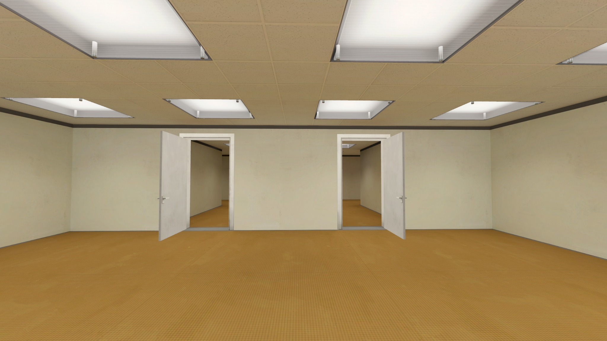
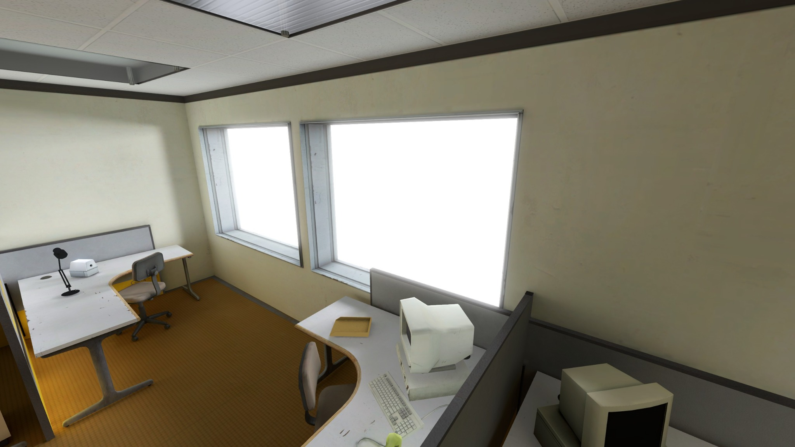
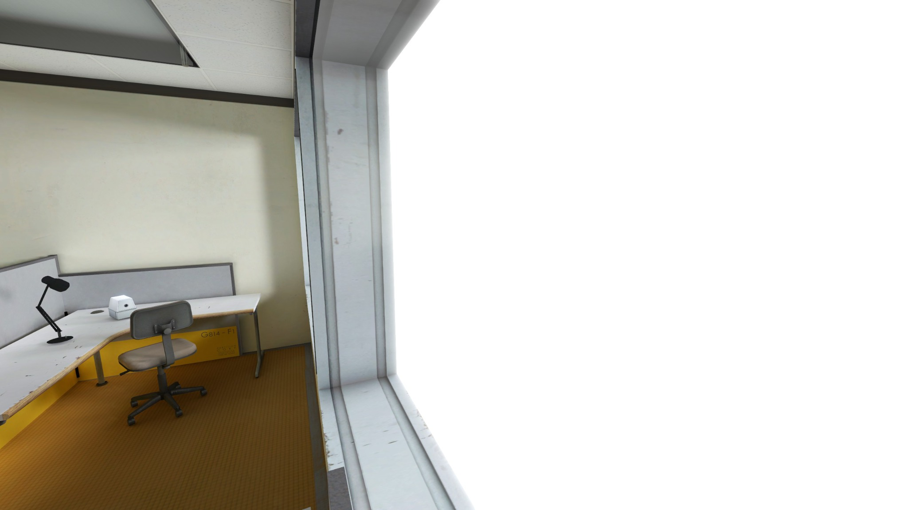
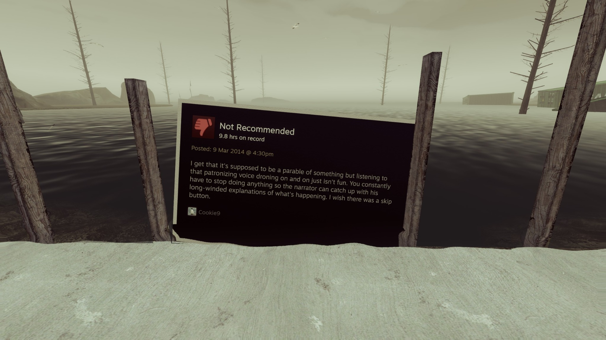

The Stanley ParableA war against the player
Many games and stories set out to tell a simple story, good vs evil, good wins and the hero gets the princess. The Stanley Parable instead asks what happens when the player is given the choice to fight back.
Livingstone and Das define Reception Theory through interpretation as “Interpretation refers to the way in which people make sense of their lives and the events, actors, processes, and texts that they encounter” (Livingstone & Das, 2013). This theory explains that the audience has an active role in what media means to them. There are fewer places where this is more relevant than video games where instead of merely hearing a story the audience actively participates in the telling of it. There are three categories of interpretations, “three positions of meaning making—the dominant (or hegemonic) reading ... the negotiated reading ... and the oppositional reading” (Livingstone & Das, 2013). Livingstone and Das further explain the dominant reading being the author's intention, the negotiated being a mix between the creator's intent and the audience opinion, and oppositional being a rejection or disregard of the creator's intent. For example, a game such as Dead Space may have a dominant interpretation regarding the trauma one goes through when dealing with grief. While the negotiated interpretation might be, it's simply a space game dealing with the horrors of the unknown. Oppositionally, however, the audience may just interpret the game as a mindless shooter with a weird obsession with dismemberment while disregarding any of the themes about grief and fear. The Stanley Parable however, takes this entire theory and turns it into a game.
Originally released as a mod in 2011 (ModDB, n.d.) then later as a full game in 2013 (Valve Corporation, n.d.) The Stanley Parable is a game centered around the theme of player choice. “When Stanley came to a set of two open doors he entered the door on his left” (Galactic Cafe, 2013). Every choice in the game is laid out by the Narrator, which doors you enter, which buttons to press and even the direction you take the stairs. However, you are at the controls. It's your story; you decide what happens, or do you?

Dominant/preferred reading
Take the door on the left, go up the stairs, do as the narrator intends and the player finds a story regarding a man tearing down an evil system while the mastermind is away, a simple absurdity of the mundane. Presented to the player as the correct story, the dominant interpretation and all in under 30 minutes. However, the player is at the controls; this story is not theirs to tell but theirs to enact. Refuse every instruction and you receive a webinar on the concept of choice before mocking you as not a real person.
Negotiated reading
The game has more than two extremes. Follow the directions until Stanley reaches the stairs and heading down has the player witness Stanley going insane as his world crumbles around him. This shows the negotiated interpretation follows some directions, rejects a few others and you leave the game thinking maybe it was all a bit crazy. The player accepts much of the Narrator's intended story before choosing to deviate, allowing the audience to reshape the narrative without completely rejecting the meaning encoded by its creator.


Oppositional reading
What if the player instead decides I'm not going to play at all? Stay in Stanley's office and refuse to act, “glitch” through a window? All these choices seem to be the player's to make; however, they all contain scripted narration, asking whether the player had any true choice to begin with. These actions reflect the oppositional view some have of the game. Take the infamous review by issssk “I get that it's supposed to be a parable of something, but listening to that patronizing voice droning on and on just isn't fun.” (issssk, 2018) Even this isn't sacred, Crows Crows Crows took this review and placed it in the reimagined/expanded edition The Stanley Parable: Ultra Deluxe just to add to its own narrative. When even your own opinions aren't separate, where does this leave audience interpretation when even your own reviews are encoded into the game?

The player has the last word
Reception Theory describes the relationship between creator and audience as a dance with give and take, ebb and flow, conflict and cooperation. The Stanley Parable, however, takes charge of this dance making light of any control the player may have. Despite this, the game shows a real-time relationship between what the developer wants and decides a game to be and what the audience ends up saying it is. The Narrator himself even gives his own review to the game as you play it “...If there is any message to be taken from The Stanley Parable: Ultra Deluxe, it is this... What a fortune, a privilege, a joy it is to have had such an experience. It leaves me hopeful that as a community - as a world - there is time for us to become our greatest selves, as great as we ever could dream of in our wildest, most ambitious visions for a brighter future…” (Crows Crows Crows, 2022). Despite all this, though, the audience is the one who plays the game, who presses the buttons and in the end writes the reviews.
The player may not have control over The Stanley Parable, but they still have control over what The Stanley Parable means to them.